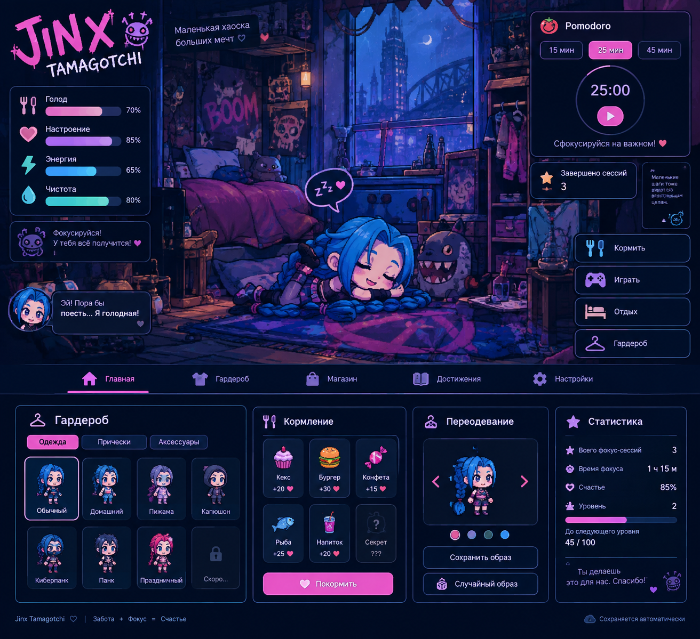

JINX
TAMAGOTCHI
Маленькая хаоска больших мечт ♡
🔥
0
⭐ Ур.
1

Zzz... ♥
🍴
🎮
🛏
👗 Гардероб
Выбери образ для Jinx
💙 Обычный
🏠 Домашний
🌙 Пижама
🖤 Капюшон
⚡ Киберпанк
💗 Праздничный
🍴 Кормление
🧁
Кекс
+20 ♥
🍔
Бургер
+30 ♥
🍬
Конфета
+15 ♥
🐟
Рыба
+25 ♥